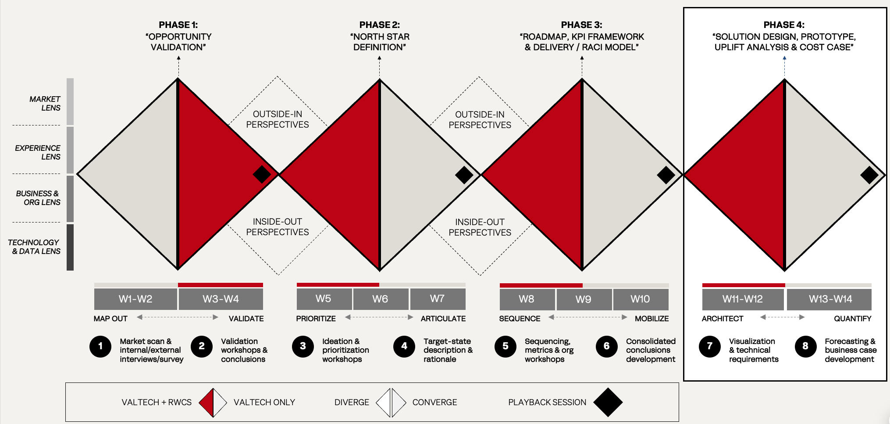

Valtech's four-phase framework, applied to BP's multi-year engagement and shaped around the brief's anti-dependency principle. From mobilisation to background advisory, the partner role decreases by design.
Valtech's standard process for transformative engagements is the four-phase Quadruple Diamond — opportunity validation, north star definition, roadmap, and solution design — designed for strategy work across roughly 14 weeks.
For BP, the engagement is delivery-led, not strategy-led: strategy has been set, Phase 1 of the platform is in flight, and the work runs across years rather than weeks. So the four-phase logic stretches — phases become years instead of weeks, embedded delivery replaces discovery diamonds, and partner footprint is engineered to fall through each phase rather than to grow with it.
The phases stay. The trajectory inverts.

Valtech's Quadruple Diamond, proven across multiple strategic engagements: four phases, each a diverge–converge cycle viewed through the four strategic lenses. For BP, the same logic stretches across years — with Valtech's share of delivery engineered to fall through each phase.
Leads strategic direction across the engagement. Kristoffer brings senior consulting experience across global enterprise clients, anchoring the constructive challenge that defines how Valtech partners with clients at this level.
Leads experience and design across the engagement. Madeleine combines strategic CX direction with hands-on design system leadership, having shaped global brand experiences across multiple industries.
Leads the organisational side of the engagement — governance, ways of working, and capability transfer milestones. Anders specialises in moving fragmented teams into shared operating models without losing local nuance.
Leads martech and platform strategy. Sune brings deep expertise across Contentful and modern composable architectures, with a track record of opinionated pattern discipline that scales across complex content estates.
Accountable for overall delivery — quality, expectations, and progress communicated clearly to BP leadership. Karin has led some of Valtech's most complex enterprise platform engagements and is known for protecting pattern discipline at scale.
Indicative core team for Phase 1 and 2. Specialists, engineers, and additional designers scale flexibly across the four phases. Final composition subject to availability of consultants and final engagement scope.
A standard engagement plans for completion. This one plans for continuation in a different shape — BP-led delivery, partner-as-advisor. The shrinking footprint isn't where the engagement ends; it is how the engagement runs from week one.
Across all four phases, Valtech operates inside BP's leadership group — not alongside it. Joint steering at every phase boundary. Shared roadmap ownership. Shared accountability for outcomes, not just deliverables. The shrinking at the delivery layer is enabled by the closeness at the top.